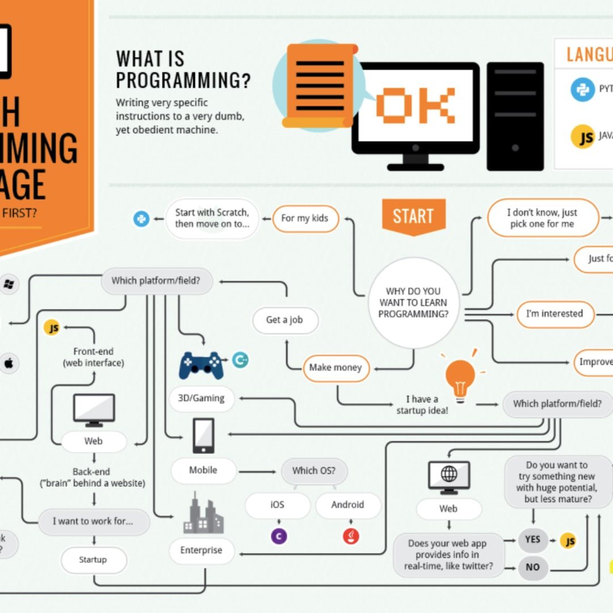
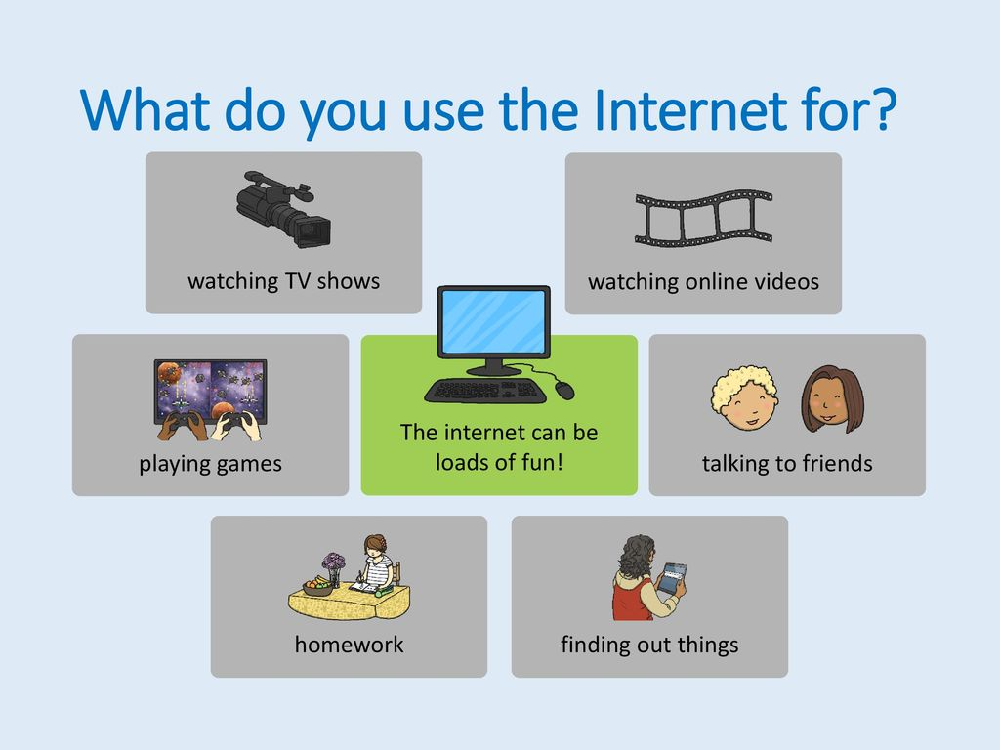
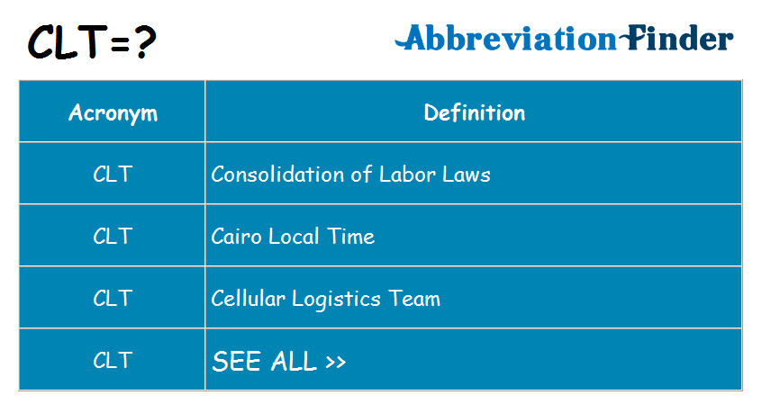

What coding languages are you
comfortable with?
How many people are in the
IT department?

What technical websites do you
follow and why?

Do you prefer service-oriented or
batch-oriented solutions and why?
What elements are necessary for
a successful team and why?
What completed project is your
company most proud?